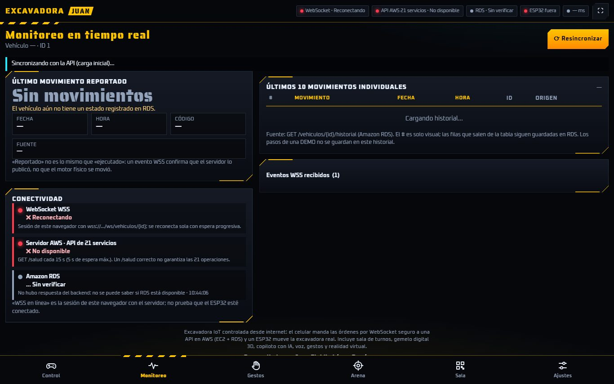

Excavadora IoT · Monitoreo en tiempo real
Últimos movimientos guardados en Amazon RDS y estado de la conexión con la API en AWS.
Ver el portafolio completo
Últimos movimientos guardados en Amazon RDS y estado de la conexión con la API en AWS.
Ver el portafolio completo